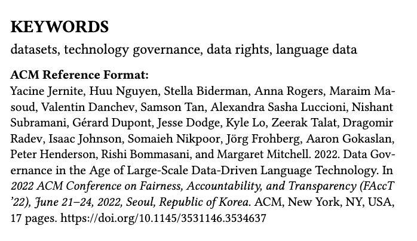

Simon Fraser University
2024-03-27
This slide contains content for March 27, 2024 lecture.
Today’s lecture: gain exposure to a few different frameworks for data governance.
Some guiding questions (to keep back of mind)
From: WP
“Governance is the process of making and enforcing decisions within an organization or society. It encompasses decision-making, rule-setting, and enforcement mechanisms to guide the functioning of an organization or society.”
From the Commission on Global Governance:
“the sum of the many ways individuals and institutions, public and private, manage their common affairs””
Pick your favorite LLM and get an answer like this
Can be useful to think about data governance as a paralell to climate governance.
What are the current processes in place to determine how new climate laws are passed, how they’re enforced, how they do (or do not) cascade between states
Cf.
Latin for “confer or conferatur”, meaning “compare” in English. Abbreviation used for “compare with” WP
Exact categorization of governance or not is not a big deal for our immediate concerns, but the point here is to emphasize the flexibility of the word (and the value of frameworks)
Figures here are from
Key differences of the LLM era are even more
Jernite et al., Section 1: > “Wikipedia-scale corpora to close to three orders of magnitude more”
Note: “design a new governance structure” = change the rules or norms (implicitly, it’s about policy change and changing implicit rules)
It’s ambitious!
Key idea of this paper is a “Data Stewardship Organization” – a new org that would act as a facilitator (e.g., talk to data creators and data subjects, but also talk to modelers and legal teams and such)
This paper really focuses on language data, with a call out for human-centric data.
How might other modalities disrupt this proposal?
data.csv or data.parquet vs. stuff you do that will get you a different data.csv“actionable guidelines and processes for identifying what consitutes a legitimate removal request depending on the local norms and regulations of the requester and data custodian”
Note that if you leave data.csv on your work machine for all eternity, this breaks contestation! So you need to either have some kind of periodic (weekly?) check-in ritual to see which rows need to be deleted, or you can’t actually leave data on your machine and have to “pull” it at training time
See e.g. Anjalie Field, Su Lin Blodgett, Zeerak Waseem, and Yulia Tsvetkov. 2021. A Survey of Race, Racism, and Anti-Racism in NLP. arXiv:2106.11410 [cs.CL]
(Lots of open questions here, keep an eye on this space.)
Note
If you’re going into ML research, learning dataset documentation practices may give you a leg up as they become more commonly required in paper submissions.
“Our values of autonomy, consent, and contestation are difficult if not practically impossible for public dataset repositories, due to the full reliance on self-governance by dataset submitters”
Wikipedia has a complex governance structure that “works” right now
Potential conflicts between values. Many different languages and geographies.
There’s a lot of concepts to unpack here. How should we change our behavior going forward? Assuming we agree with all this, what should we do? If we don’t agree with this, what should we do?
Define 6 actors (they can overlap; you can both host data and use it to train models!)
Example: you put your code on GitHub
Example: HuggingFace includes your code on Github in “The Stack” based on it’s license (and gives you an opt-out option)
Example: HuggingFace hosts that data. Perhaps an additional research org, like a lab at a university, also hosts a copy.
Example: you train a large language model on a aggregated code data.
Example: This is the org that needs to be brought into existence!
In this framework, there’s a requirement that:
“each subsequent actor on this path is responsible for communicating the requirements and restrictions formulated by its predecessors in addition to its own” (Jernite et al., Section 5)
This is part of the proposal: some actors might argue this isn’t currently part of the rules
CARE =
“Indigenous data sovereignty means that Indigenous Peoples have the right to own, control, access, and steward data about their communities, lands, and culture”
the CARE principles are meant to avoid excessively “Data-centric” approach, and be more people and purpose-driven
Example: Collective Benefit is about the ultimate purpose of the data, not selecting a certain observation from a given data file on the basis of some ML peformance metric